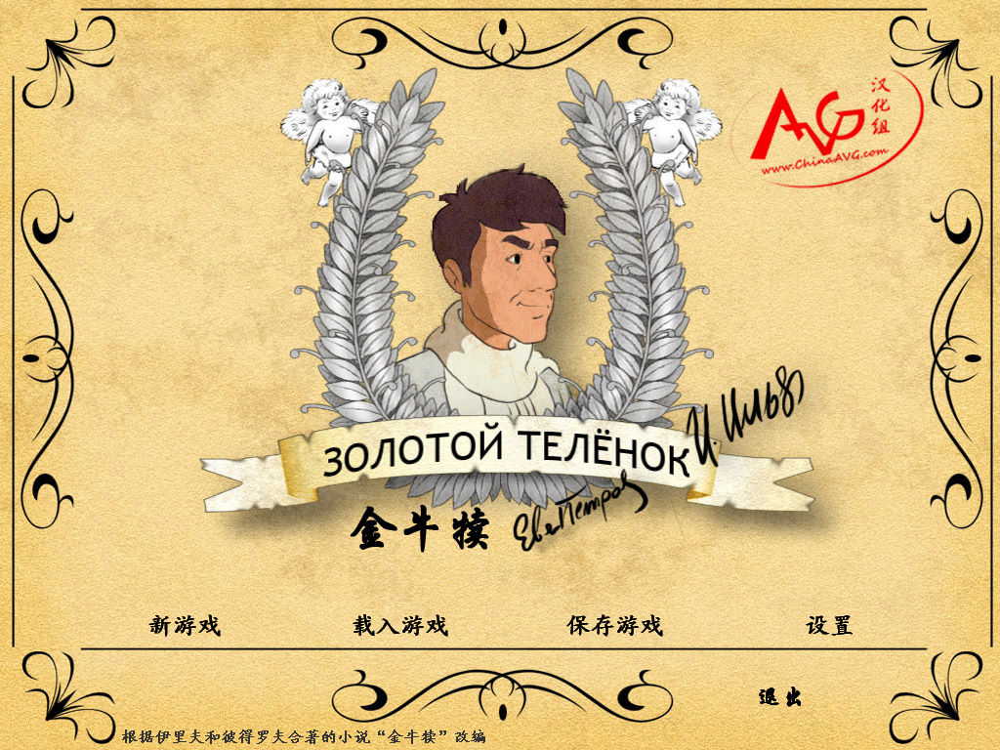
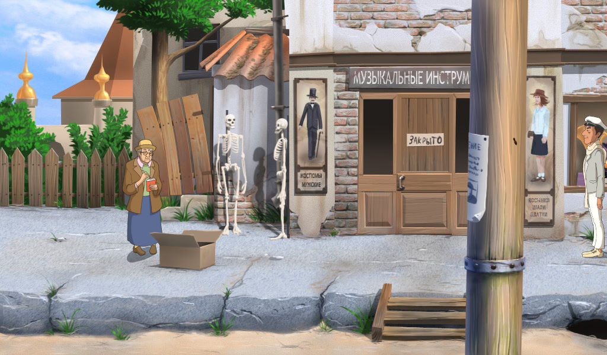

名稱：金牛犢 (The Golden Calf／Zolotoj Teljonok，簡中／俄文版) 簡介：俄國RootFix 2006年出品的冒險解謎遊戲，由Akella代理發行 [待補]。

備註：本版為俄文簡中漢化版 保護：光碟StarForce 3.04（序號：TH47E-G8Z4M-UQUFA-Y6AVR-MDVUK） 限制：由於StarForce保護的關係，只能在WinXP系統上執行。 備註：簡中漢化後，必須在簡中系統上執行，否則會亂碼。 檔案：minicd.rar = 最小檢驗光碟檔 chs10.rar = 簡中漢化檔